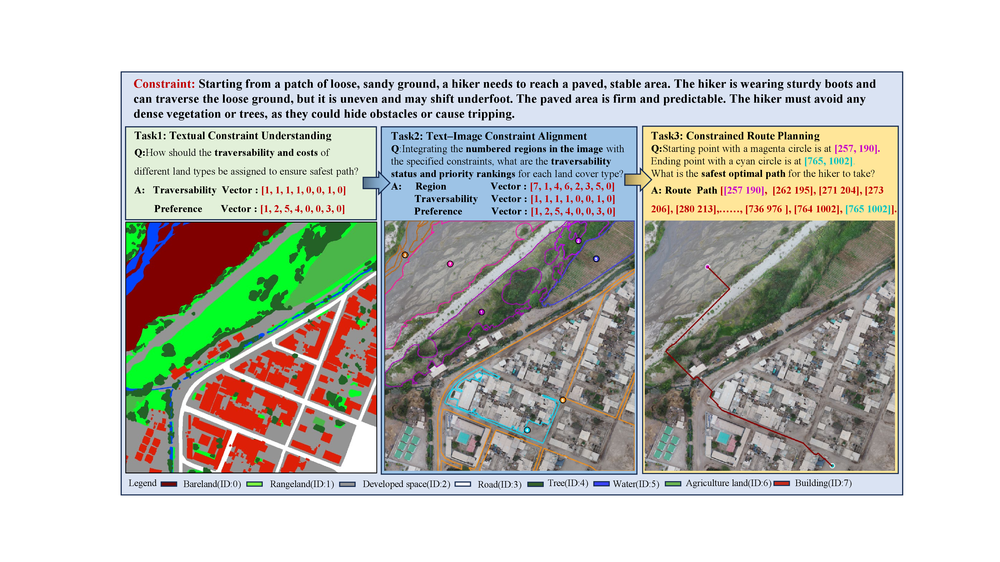

Remote sensing underpins crucial applications such as disaster relief and ecological field surveys, where systems must understand complex scenes and constraints and make reliable decisions. Current remote-sensing benchmarks mainly focus on evaluating perception and reasoning capabilities of multimodal large language models (MLLMs). They fail to assess planning capability, stemming either from the difficulty of curating and validating planning tasks at scale or from evaluation protocols that are inaccurate and inadequate. To address these limitations, we introduce NeSy-Route, a large-scale neuro-symbolic benchmark for constrained route planning in remote sensing. Within this benchmark, we introduce an automated data-generation framework that integrates high-fidelity semantic masks with heuristic search to produce diverse route-planning tasks with provably optimal solutions. This allows NeSy-Route to comprehensively evaluate planning across 10,821 route-planning samples, nearly 10 times larger than the largest prior benchmark. Furthermore, a three-level hierarchical neuro-symbolic evaluation protocol is developed to enable accurate assessment and support fine-grained analysis on perception, reasoning, and planning simultaneously. Our comprehensive evaluation of various state-of-the-art MLLMs demonstrates that existing MLLMs show significant deficiencies in perception and planning capabilities. We hope NeSy-Route can support further research and development of more powerful MLLMs for remote sensing.

@article{yang2026nesyroute,
title = {NeSy-Route: A Neuro-Symbolic Benchmark for Constrained Route Planning in Remote Sensing},
author = {Ming Yang and Zhi Zhou and Shi-Yu Tian and Kun-Yang Yu and Lan-Zhe Guo and Yu-Feng Li},
journal = {arXiv preprint arXiv:2603.16307},
year = {2026}
}